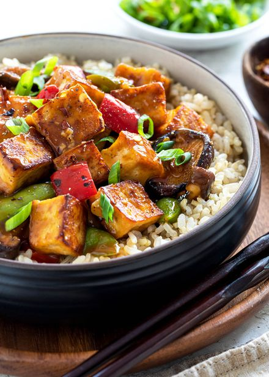

Spicy Tofu Stir-fry

Description
This one-pot, vegetarian stir-fry uses cubes of extra-firm tofu fried until the surface is crispy. It's then tossed with crunchy vegetables and a lightly sweet, spicy, and sticky orange sauce.
Ingredients
16 ounces extra-firm tofu, cut into 1/2-inch cubes
1/2 cup orange juice
1/3 cup vegetable stock
1/4 cup soy sauce
3 tablespoons honey
2 teaspoons rice vinegar
1/2 teaspoon garlic chili sauce, add more for a spicier sauce
1 tablespoon cornstarch
2 tablespoons water
4 teaspoons vegetable oil, divided
1 teaspoon sesame oil
4 ounces shiitake mushrooms, stems removed, 1/2-inch thick slices
2 cups sugar snap peas
1/2 large red bell pepper, 1/2-inch dice
1/2 large green bell pepper, 1/2-inch dice
1 tablespoon minced garlic
2 teaspoons minced ginger
1 tablespoon green onion, thinly sliced
Kosher salt, to taste
Black pepper, to taste
Steps
Prepare the baking sheets:
Line a large baking sheet with paper towels, have another baking sheet ready and a weight like a jar of sugar or flour.Press the tofu:
Drain tofu and dry with paper towels. Arrange the tofu in a single layer on the baking sheet lined with paper towels. Cover with additional paper towels. Place a second sheet pan on top. Place a heavy can or jar on the pan to lightly press out the excess moisture from the tofu. Leave it for about 10 minutes.Dry the tofu:
After pressing, use dry paper towels to gently pat each piece of tofu dry to remove as much residual moisture as possible. Set the pieces aside on dry paper towels.Make the sauce:
In a medium-sized bowl whisk together orange juice, vegetable broth, soy sauce, honey, rice vinegar, and garlic chili sauce. In a small bowl whisk together cornstarch and water, set aside.Fry the tofu:
Heat a wok or 12-inch nonstick skillet over medium-high heat. Add 3 teaspoons vegetable oil and sesame oil and heat until shimmering but not smoking. Swirl the pan to coat with the oil.
Working in two batches, add tofu to the pan in a single layer. Cook until golden brown, about 2 to 3 minutes. Flip over and cook the other side until golden browned, another 2 to 3 minutes. Transfer to a clean plate lined with a paper towel, then fry the remaining tofu.Stir-fry the vegetables:
Add the remaining 1 teaspoon of vegetable oil to the pan. Add the mushrooms and sugar snap peas, stir-fry for 2 minutes. Add the diced bell peppers, cook for 1 minute. Add the garlic and ginger, stir-fry for 30 seconds.Cook the sauce:
Add the sauce mixture to the pan, simmer for 30 seconds. Mix the cornstarch mixture, then gradually add to the pan, stir constantly until thickened, about 30 seconds.Add the tofu back to the pan:
Turn off the heat and add the tofu back to the pan, stir to coat and warm through, about 1 minute. Season tofu stir-fry with salt, pepper, and garlic chili oil to taste.Serve:
Serve tofu stir-fry with rice and garnish with green onions.
Home